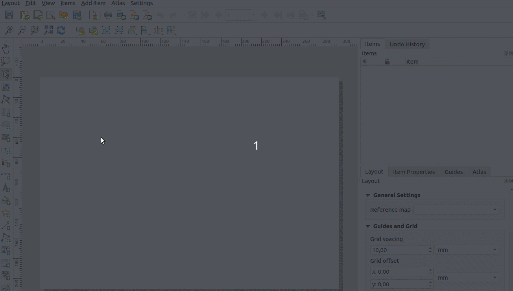

12 Kappale 11: Kartta-atlaksen kustomointi
12.1 Tehtävä 11.1
Käytä QGISin kartta-atlas työkalua. Tuota kuvan mukainen karttatulostesarja Euroopan valtioille.

- Luo uusi karttatuloste ja sille karttaikkuna, jonka sisältöä hallinnoi valtioaineiston perusteella luotu kartta-atlas.
- Aseta kartta-atlaksen sivun nimeksi ADMIN-attribuuttikentän arvo
- Hyödynnä kartta-atlaksen asetuksista löytyvää suodatusmahdollisuutta ja tarkastele vain Euroopan valtioita
- Luo dynaaminen otsikkonimiö, joka on muotoa “Map …/50” (atlaksen sivu)
- Luo dynaaminen karttatulostenimiö, johon muodostuu lista sen hetkisen atlas-sivun kattavuusobjektin alueelle osuvista lentokentistä (nimi-tieto kustakin, pilkulla erotettuina)
- Säädä valtioiden näkyvyyttä siten, että vain atlas-sivun kattavuusobjektina toimiva valtio näkyy
- Säädä lentokenttien näkyvyyttä siten, että vain atlas-sivun kattavuusobjektin alueella sijaitsevat lentokenttäkohteet kuvautuvat karttapohjalle
Aineistot:
valtiot.gpkglentokentat.gpkg
Vaihe 1 (Atlaksen ja karttaobjektin asetukset):

Vaihe 2 (otsikko): @atlas_feature- muuttuja kertoo sivunumeron.
Vaihe 3 (lista lentokentistä):
- Käytä
overlay_contains()- funktiota. Hae sillä lentokenttien nimet. Funktio palauttaa tuloksetArray- datatyyppinä. - Muuta
Arraymerkkijonoksi (string). Millä funktiolla se onnistuu?
Vaihe 4 (valtion näkyvyys):
- Tee sääntöpohjainen visualisointi valtioille.
@atlas_pagename- muuttuja kertoo tämänhetkisen sivun nimen.
Vaihe 5 (lentokenttien näkyvyys):
- Tee sääntöpohjainen visualisointi lentokentille.
- Millä funktiolla voit tarkastaa leikkaako lentokenttäpiste valtiopolygonin?
get_feature()- funktiolla saat haettua toisen tason kohteen.- Millä funktiolla saat palautettua kohteen geometrian?
-- Atlaksen tarkasteltavien kattavuusobjektien suodatus
"CONTINENT" = 'Europe'
-- Dynaaminen otsikkonimiö (tekstikenttään)
[%
concat(
'Map ', @atlas_featurenumber, '/', @atlas_totalfeatures
)
%]
-- Dynaaminen karttatulostenimiö, jossa listaus atlas-objektin alueelle kuuluvista lentokentistä (tekstikenttään)
Valtio: [%
"NAME"
%]
Lentokentät: [%
array_to_string(
array := overlay_contains(
layer := 'lentokentat', expression := "NAME"
), delimiter := ', '
)
%]
-- Valtioiden näkyvyys
"NAME" = @atlas_pagename
-- Lentokenttien näkyvyys
intersects(
$geometry, geometry(
get_feature(
'valtiot', 'NAME', @atlas_pagename
)
)
)